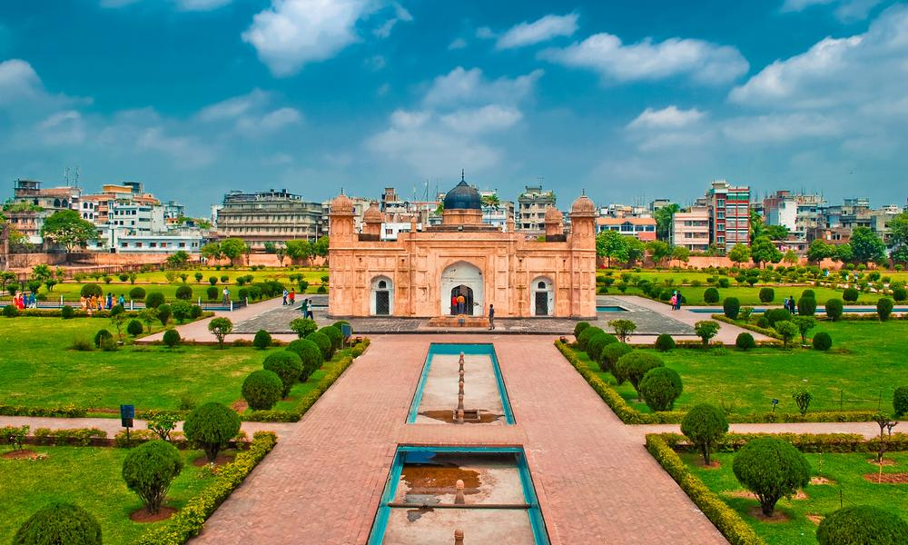
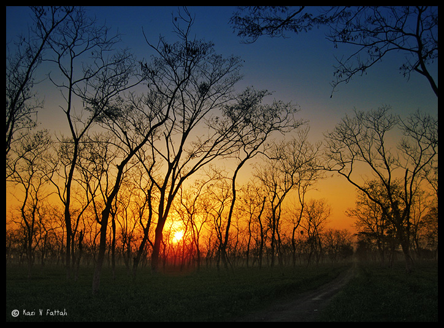

Exciting Deals for You
Chittagong
Cox's Bazar & Saintmartin Island only for $300
Cox's Bazar is a city, fishing port, tourism centre and district headquarters in southeastern Bangladesh. It is famous mostly for its long natural sandy beach.The beach in Cox's Bazar is the main attraction of the town with an unbroken length of 155 km (96 mi) also termed the "longest natural unbroken sea beach" in the world.Other than the beach there are several places of interest near the town which can easily be visited from the town center.

Saintmartin island is a small island (area only 36 km) in the northeastern part of the Bay of Bengal.There is a small adjoining island that is separated at high tide, called Chera Dwip.St. Martin's Island has become a tourist spot, and five shipping liners run daily trips to the island.It is possible to walk around the island in a day because it measures only 8 km2 (3 sq. mile), shrinking to about 5 km2 (2 sq. mi) during high tide. The island exists only because of its coral base, so removal of that coral risks erosion of the beach.
Package will cover hotel cost,meals and selected destinantion travel expense. This package is for 2 nights and 3 days.
Hillside
Bandarban & Rangamati only for $250
Bandarban "The dam of monkeys"), is a district in South-Eastern Bangladesh, and a part of the Chittagong Division.[2] It is one of the three hill districts of Bangladesh and a part of the Chittagong Hill Tracts. The Buddha Dhatu Jadi, the Buddhist temple in Bangladesh, located in Balaghata, 4 km from the town. This place attracts many tourists every year. This Theravada Buddhist temple is made completely in the style of South-East Asia and houses the second largest statue of Buddha in Bangladesh. The waterfall named Shoilo Propat at Milanchari is another place tourists like to visit. The numerous Buddhist temples, known as kyang in local tongue, and bhihars in the town include the highly notable the Rajvihar (royal vihar) at Jadipara and the Ujanipara Bhihar. Bawm villages around Chimbuk, and Mru villages a little further off, are also lie within a day's journey from the town.

Rangamati is a district in south-eastern Bangladesh. It is a part of the Chittagong Division[3] and the town of Rangamati serves as the headquarters of the district. By area, Rangamati is the largest district of the country. Kaptai Lake is a man made lake in south-eastern Bangladesh. It is located in the Kaptai Upazila under Rangamati District of Chittagong Division. The lake was created as a result of building the Kaptai Dam on the Karnaphuli River, as part of the Karnaphuli Hydro-electric project. The Kaptai Lake's average depth is 100 feet (30 m) and maximum depth is 490 feet (150 m). In Bengali the name of the Hanging Bridge is Jhulonto Bridge and this is also popular to its visitors. This hanging bridge is established on Kaptai Lake. This is the link way of Kaptai Lake. Sajek is a union at Baghaichari Upazila in Rangamati districts. Basically it is name of a river which separates Bangladesh from India. The river flows into the Karnafuli River in the Chittagong Hill Tracts. Sajek Valley is situated in the North angle of Rangamati.
Package will cover hotel cost,meals and selected destinantion travel expense. This package is for 2 nights and 3 days.
Combo Deals
Chittagong + Bandarban + Rangamati + Cox's Bazar + Saintmartin only for $850
This combo package will allow you to visit all the attractive place in Chittagong division.
Package will cover hotel cost,meals and selected destinantion travel expense. This package is for 6 nights and 7 days.
Dhaka
Dhaka City only for $450

A heady blend of ancient and modern on almost every corner, friendly locals, and a wealth of historical monuments - there are lots of great reasons to plan your trip to Dhaka.Here are some list of place to visit in Dhaka
- Sadarghat
Sadarghat is one of the largest river ports in the world and it's a constant stream of activity. Marvel at day-to-day life on the banks of the Buriganga River, or take one of the small boats to the center of the river to enjoy a few moments of peace and calm.
- Dhakeshwari Temple
An essential stop on any visit to Dhaka, the 1,200-year-old temple is the center of Hindu religion in the region and known for its beautiful architecture.
- Ahsan Manzil
The spectacular 'pink palace' was the summer home of Sheikh Enayet Ullah during the Mughal period and a French trading house in the 18th century.
- Lalbagh Fort Masjid
Dhaka's most spectacular building isn't a religious structure. Instead, it's Lalbagh Masjid - a fort that was partially erected by the area's Mughal rulers in the late 17th century before being deemed unlucky and abandoned for centuries. Nowadays, the defensive motive has gone, and the fort is an oasis of beautifully tended gardens and restored architecture. If you can get to the site near daybreak or sunset, the rose red stone used to build the fort glimmers beautifully in the light. And don't miss the Diwan, with its impressive collection of Mughal paintings.
- Sonargaon
Sonargaon is located near the old course of the Brahmaputra River. To the north of Sonargaon are the Wari-Bateshwar ruins, which archaeologists have considered to be the emporium (trading colony) of Sounagoura mentioned by Greco-Roman writers.
Package will cover hotel cost,meals and selected destinantion travel expense. This package is for 3 nights and 4 days.
Sylhet
Sylhet and Srimangal only for $300

Sylhet is a metropolitan city in northeastern Bangladesh. It is the administrative seat of Sylhet Division. The city is located on the right bank of the Surma River in northeastern Bengal. It has a subtropical climate and lush highland terrain. Sylhet has a "Friendship Link" with the city of St Albans in the United Kingdom. The link was established in 1988 when the District council supported a housing project in Sylhet as part of the International Year of Shelter for the Homeless.

It is said the name Sreemangal (or Srimangal) is named after Sri Das and Mangal Das; two brothers who settled on the banks of the Hail. The closest Manipuri village to Srimangal is Ramnagar. Local tours will usually include a trip here, but you can also walk here yourself.Plantation in Srimangal & Around
The sprawling Finlays Tea Estate, just on the edge of Srimangal, is easily accessible, and you can step into the bushes and interact with tea pickers once you have taken prior permission from the estate office by the Srimangal–Bhanugach road. The gardens also spill over to the other side of the road from the estate office.
Combo Deals
Sylhet + Srimangal + Jaflong only for $350
Package will cover hotel cost,meals and selected destinantion travel expense. This package is for 2 nights and 3 days.
Khulna
Bagherhat and Shundarban only for $450
Bagerhat is a great historical place. Bagerhat city is famous for its mosques. Hazrat Khan Jahan Ali founded this town. He was just and a great saint of the fifteen century. At the time of his reign, Bagerhat was a part of the Sunderban forest. He cleared the forest and made it habitable. He named it Khalifabad. He erected many official buildings to run his administration. He also built many mosques and dug tanks. The buildings erected by him are now all in ruins. The city of Bagerhat has been given the status of a World Heritage Site. This honour was conferred by UNESCO in 1973.
The Sundarbans is a mangrove area in the delta formed by the confluence of the Ganges, Brahmaputra and Meghna Rivers in the Bay of Bengal. It spans from the Hooghly River in India's state of West Bengal to the Baleswar River in Bangladesh. It comprises closed and open mangrove forests, agriculturally used land, mudflats and barren land, and is intersected by multiple tidal streams and channels. Four protected areas in the Sundarbans are enlisted as UNESCO World Heritage Sites.The Sundarbans freshwater swamp forests are a tropical moist broadleaf forest ecoregion of Bangladesh. It represents the brackish swamp forests that lie behind the Sundarbans Mangroves, where the salinity is more pronounced. The freshwater ecoregion is an area where the water is only slightly brackish and becomes quite fresh during the rainy season, when the freshwater plumes from the Ganges and the Brahmaputra rivers push the intruding salt water out and bring a deposit of silt. It covers 14,600 square kilometres
Package will cover hotel cost,meals and selected destinantion travel expense. This package is for 2 nights and 3 days.